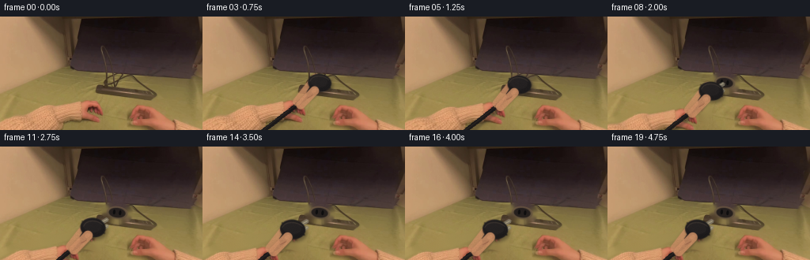
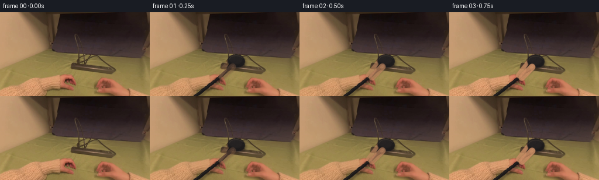
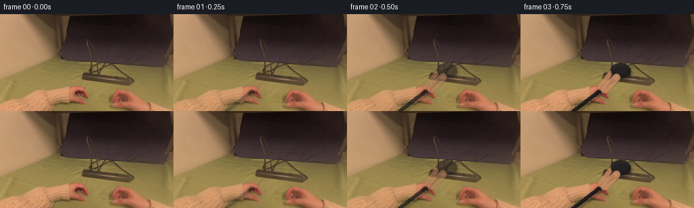

CODING AGENTS AS PIXEL WORLD MODELS
traex/GPT-5.6-Sol · common50_0021
点击播放 · 原生 RGB 像素
逐轮保存的候选
回放视频、检查图与代码变化。
每份候选均可单独播放。实际图片检查记录在下方工具轨迹中。
候选 01播放与检查图
点击播放 · 原生 RGB 像素


展开代码变化
--- 上一保存版本
+++ 本次保存版本
@@ -0,0 +1,307 @@
+"""Generate a short, deterministic image-based manipulation video.
+
+The source photograph is retained as much as possible. The hand and plug are
+separated into soft layers; a clean plate is made locally, then the layers are
+moved with eased, sub-pixel motion. Small shaded shapes clarify the grip,
+socket, plug, and exposed prongs while preserving the warm lighting/noise of
+the source frame.
+"""
+from pathlib import Path
+import cv2
+import numpy as np
+from PIL import Image
+import artifact_io
+
+ROOT = Path(__file__).resolve().parent
+W, H = 256, 144
+
+
+def smoothstep(x):
+ x = np.clip(x, 0.0, 1.0)
+ return x*x*(3.0-2.0*x)
+
+
+def soft(mask, sigma=1.2):
+ mask = mask.astype(np.float32)
+ if sigma > 0:
+ mask = cv2.GaussianBlur(mask, (0, 0), sigma)
+ return np.clip(mask, 0, 1)
+
+
+def over(dst, src, alpha):
+ """Premultiplied-style RGB alpha composite, arrays at video resolution."""
+ a = np.clip(alpha, 0, 1).astype(np.float32)[..., None]
+ return dst*(1-a) + src.astype(np.float32)*a
+
+
+def warp_layer(rgb, alpha, dx, dy, scale=1.0, center=(125, 112)):
+ cx, cy = center
+ M = np.array([[scale, 0, dx + cx*(1-scale)],
+ [0, scale, dy + cy*(1-scale)]], np.float32)
+ pm = rgb.astype(np.float32) * alpha[..., None]
+ wp = cv2.warpAffine(pm, M, (W, H), flags=cv2.INTER_CUBIC,
+ borderMode=cv2.BORDER_CONSTANT, borderValue=0)
+ wa = cv2.warpAffine(alpha.astype(np.float32), M, (W, H),
+ flags=cv2.INTER_CUBIC, borderMode=cv2.BORDER_CONSTANT,
+ borderValue=0)
+ wa = np.clip(wa, 0, 1)
+ wrgb = wp / np.maximum(wa[..., None], 1e-4)
+ return np.clip(wrgb, 0, 255), wa
+
+
+def hi_mask(draw_fn, blur=.6, ss=4):
+ m = np.zeros((H*ss, W*ss), np.uint8)
+ draw_fn(m, ss)
+ m = cv2.resize(m, (W, H), interpolation=cv2.INTER_AREA).astype(np.float32)/255
+ if blur:
+ m = cv2.GaussianBlur(m, (0, 0), blur)
+ return np.clip(m, 0, 1)
+
+
+def capsule_mask(p0, p1, radius):
+ def fn(m, s):
+ a = tuple(np.rint(np.array(p0)*s).astype(int))
+ b = tuple(np.rint(np.array(p1)*s).astype(int))
+ cv2.line(m, a, b, 255, max(1, int(round(2*radius*s))), cv2.LINE_AA)
+ cv2.circle(m, a, int(round(radius*s)), 255, -1, cv2.LINE_AA)
+ cv2.circle(m, b, int(round(radius*s)), 255, -1, cv2.LINE_AA)
+ return hi_mask(fn, .45)
+
+
+def ellipse_mask(center, axes, angle=0, blur=.55):
+ def fn(m, s):
+ c = tuple(np.rint(np.array(center)*s).astype(int))
+ ax = tuple(np.rint(np.array(axes)*s).astype(int))
+ cv2.ellipse(m, c, ax, angle, 0, 360, 255, -1, cv2.LINE_AA)
+ return hi_mask(fn, blur)
+
+
+def polygon_mask(points, blur=.5):
+ def fn(m, s):
+ pts = np.rint(np.asarray(points)*s).astype(np.int32)
+ cv2.fillConvexPoly(m, pts, 255, cv2.LINE_AA)
+ return hi_mask(fn, blur)
+
+
+def texture_color(base, yy, xx, seed_noise, strength=1.0):
+ # Warm directional illumination and source-like fine sensor texture.
+ shade = (0.16*(110-yy) + 0.045*(150-xx))*strength
+ rgb = np.empty((H, W, 3), np.float32)
+ rgb[:] = np.asarray(base, np.float32)
+ rgb += shade[..., None]
+ rgb += seed_noise[..., None] * np.array([1.2, .9, .7], np.float32)
+ return np.clip(rgb, 0, 255)
+
+
+def add_curve(canvas, pts, color, width, alpha=1.0, blur=0.0):
+ """Draw an antialiased cubic/polyline onto canvas."""
+ lay = np.zeros((H, W, 3), np.float32)
+ am = np.zeros((H, W), np.uint8)
+ q = np.rint(np.asarray(pts)).astype(np.int32).reshape(-1, 1, 2)
+ cv2.polylines(am, [q], False, 255, width, cv2.LINE_AA)
+ if blur:
+ am = cv2.GaussianBlur(am, (0, 0), blur)
+ lay[:] = color
+ return over(canvas, lay, (am.astype(np.float32)/255)*alpha)
+
+
+def main():
+ src = np.asarray(Image.open(ROOT/'first_frame.png').convert('RGB'), dtype=np.uint8)
+ fsrc = src.astype(np.float32)
+ yy, xx = np.mgrid[:H, :W]
+ R, G, B = [src[..., i].astype(np.int16) for i in range(3)]
+
+ # Isolate the warm left hand/forearm whose fingertips terminate immediately
+ # below the left socket. Restricting the connected component prevents warm
+ # wood in the top-left from joining the hand.
+ skin_core = ((R > 118) & (R-G > 28) & (G-B > 7) &
+ (xx < 146) & (yy > 101)).astype(np.uint8)
+ n, labels, stats, _ = cv2.connectedComponentsWithStats(skin_core, 8)
+ candidates = [i for i in range(1, n) if stats[i, cv2.CC_STAT_AREA] > 80]
+ if candidates:
+ # component closest to the lower-left / biggest in the intended ROI
+ idx = max(candidates, key=lambda i: stats[i, cv2.CC_STAT_AREA])
+ hm = (labels == idx).astype(np.uint8)
+ else:
+ hm = skin_core
+ hm = cv2.morphologyEx(hm, cv2.MORPH_CLOSE,
+ cv2.getStructuringElement(cv2.MORPH_ELLIPSE, (9, 7)))
+ hm = cv2.dilate(hm, cv2.getStructuringElement(cv2.MORPH_ELLIPSE, (5, 5)))
+ # Do not let extraction run into the fixed strip.
+ hm[(yy < 99) | (xx > 145)] = 0
+ hand_alpha = soft(hm, 1.35)
+
+ # Clean hand plate. OpenCV inpainting handles the interior; a restrained
+ # vertical texture continuation stabilizes regions touching the image edge.
+ inpaint_mask = (hand_alpha > .08).astype(np.uint8)*255
+ clean_hand = cv2.inpaint(src, inpaint_mask, 7, cv2.INPAINT_TELEA).astype(np.float32)
+ # soften inpaint's occasional bright pinpoints
+ clean_hand = cv2.GaussianBlur(clean_hand, (0, 0), .45)
+
+ # A clean patch under the original plug, confined to the strip surface.
+ plug_hole = ellipse_mask((148, 84), (20, 15), 7, 1.0)
+ phm = (plug_hole > .12).astype(np.uint8)*255
+ clean_plug = cv2.inpaint(src, phm, 5, cv2.INPAINT_TELEA).astype(np.float32)
+ clean_plug = cv2.GaussianBlur(clean_plug, (0, 0), .35)
+
+ rng = np.random.default_rng(94217)
+ noise = cv2.GaussianBlur(rng.normal(0, 2.2, (H, W)).astype(np.float32),
+ (0, 0), .38)
+ # Skin tone is estimated from strongly warm pixels in the actual hand.
+ sel = (skin_core > 0) & (R > 145)
+ skin = np.median(src[sel], axis=0) if np.any(sel) else np.array([192, 126, 88])
+ skin = .72*skin + .28*np.array([190, 126, 91])
+ skin_tex = texture_color(skin, yy, xx, noise, .65)
+ skin_hi = texture_color(np.minimum(skin+np.array([13, 10, 8]), 250),
+ yy, xx, noise, .45)
+
+ frames = []
+ for fi in range(20):
+ if fi == 0:
+ frames.append(src.copy())
+ continue
+
+ # First 0.75 s: fingers settle. Then the plug is pulled diagonally out
+ # and toward the camera; it rests, fully clear, for the final second.
+ pull = smoothstep((fi-3.0)/10.0)
+ settle = smoothstep(fi/3.0)
+ # tiny preparatory squeeze visible before translation
+ prep = np.sin(np.clip(fi/3, 0, 1)*np.pi)*0.7 if fi <= 3 else 0
+ dx = -34.0*pull
+ dy = 21.0*pull - prep
+ scale = 1.0 + .085*pull
+ reveal = smoothstep(pull/.22) if pull > 0 else 0.0
+
+ canvas = fsrc.copy()
+
+ # Remove the original source hand in proportion to actual displacement,
+ # then return it at the eased position as a photographic layer.
+ remove = np.clip((abs(dx)+abs(dy))/4.2, 0, 1)
+ canvas = over(canvas, clean_hand, hand_alpha*remove)
+ whand, wa = warp_layer(fsrc, hand_alpha, dx, dy, 1.0, (112, 120))
+ canvas = over(canvas, whand, wa*remove)
+
+ # Reconstruct the stationary strip where the plug has vacated it.
+ canvas = over(canvas, clean_plug, plug_hole*reveal*.96)
+
+ # Fixed empty socket: low contrast, with a raised rim and two slots.
+ if reveal > 0:
+ outer = ellipse_mask((148, 84), (13.2, 8.1), 7, .45)
+ inner = ellipse_mask((148, 84), (10.4, 6.0), 7, .45)
+ rim_rgb = np.zeros_like(canvas)+np.array([91, 75, 60], np.float32)
+ dark_rgb = np.zeros_like(canvas)+np.array([29, 25, 25], np.float32)
+ canvas = over(canvas, rim_rgb, outer*reveal*.66)
+ canvas = over(canvas, dark_rgb, inner*reveal*.88)
+ # socket contact apertures, aligned with strip perspective
+ for cx, cy in ((144.2, 83.0), (151.8, 84.1)):
+ sm = ellipse_mask((cx, cy), (1.45, 3.0), 7, .30)
+ canvas = over(canvas, np.zeros_like(canvas)+[12, 12, 13],
+ sm*reveal*.92)
+ # faint upper lip catches the warm key light
+ lip = np.zeros((H, W), np.uint8)
+ cv2.ellipse(lip, (148, 84), (13, 8), 7, 194, 347, 255, 1, cv2.LINE_AA)
+ canvas = over(canvas, np.zeros_like(canvas)+[122, 97, 68],
+ lip.astype(np.float32)/255*reveal*.42)
+
+ pc = np.array([148.0+dx, 84.0+dy])
+
+ # Cable runs below the hand; its changing curve makes the removal clear.
+ # Cubic Bezier samples from plug's lower-left to off-frame lower-left.
+ p0 = pc + np.array([-8.0, 8.0])
+ p1 = np.array([117+dx*.35, 116+dy*.3])
+ p2 = np.array([89+dx*.18, 133])
+ p3 = np.array([69+dx*.10, 151])
+ ts = np.linspace(0, 1, 36)[:, None]
+ curve = ((1-ts)**3*p0 + 3*(1-ts)**2*ts*p1 +
+ 3*(1-ts)*ts**2*p2 + ts**3*p3)
+ # soft cast shadow and black rubber cable
+ canvas = add_curve(canvas, curve+np.array([1.5, 2.5]), [36, 28, 24], 7, .32, 1.2)
+ canvas = add_curve(canvas, curve, [24, 22, 23], 4, .96, .25)
+ canvas = add_curve(canvas, curve+np.array([-.5, -.7]), [67, 58, 49], 1, .35)
+
+ # Finger behind the plug (index finger), naturally anchored to source
+ # hand. It follows the extracted hand and preserves egocentric contact.
+ finger_back = capsule_mask((119+dx, 108+dy),
+ (143+dx, 77.5+dy), 4.9*scale)
+ # narrow it a little near initial frame by opacity rather than geometry
+ shadow_back = cv2.GaussianBlur(finger_back, (0, 0), 1.6)
+ canvas = over(canvas, np.zeros_like(canvas)+[72, 45, 36],
+ shadow_back*.22*settle)
+ canvas = over(canvas, skin_tex, finger_back*.78*settle)
+ # nail on index fingertip
+ nail = ellipse_mask((141.7+dx, 78.9+dy), (3.2*scale, 2.0*scale), 8, .4)
+ canvas = over(canvas, skin_hi, nail*.30*settle)
+
+ # Plug shadow on strip/table separates it without looking illustrated.
+ plug_shadow = ellipse_mask((pc[0]+2.0, pc[1]+3.2),
+ (15.5*scale, 11.5*scale), 7, 2.0)
+ canvas = over(canvas, np.zeros_like(canvas)+[16, 14, 14],
+ plug_shadow*.36)
+
+ # Exposed metal prongs appear progressively as the body clears socket,
+ # always attached to the plug and pointing back toward the socket.
+ if pull > .08:
+ pr_alpha = smoothstep((pull-.08)/.34)
+ # direction toward upper-right in the image plane
+ for off in (-4.0, 4.0):
+ a = pc + np.array([7.0, off-1.0])
+ b = a + np.array([6.0+5.0*pull, -3.5-2.2*pull])
+ canvas = add_curve(canvas, [a, b], [139, 132, 113], 3,
+ .74*pr_alpha, .25)
+ canvas = add_curve(canvas, [a+[0,-.5], b+[0,-.5]],
+ [204, 191, 153], 1, .50*pr_alpha)
+
+ # Black plug body: rounded broad body + narrower cord strain relief.
+ body = ellipse_mask(tuple(pc), (14.8*scale, 11.3*scale), 7, .55)
+ # slightly squared center gives the ellipse a molded rectangular profile
+ q = np.array([[-13,-8],[11,-7],[14,7],[-10,10]], np.float32)*scale + pc
+ body = np.maximum(body, polygon_mask(q, .65))
+ body_tex = np.zeros_like(canvas)+np.array([27, 25, 26], np.float32)
+ # gentle source illumination, brighter upper-left
+ grad = np.clip((100-yy)*.13 + (150-xx)*.035, -8, 9)
+ body_tex += grad[..., None]
+ body_tex += noise[..., None]*.24
+ canvas = over(canvas, body_tex, body*.98)
+ # molded center face and glints
+ face = ellipse_mask((pc[0]-1.0, pc[1]-1.8),
+ (10.8*scale, 7.2*scale), 7, .55)
+ canvas = over(canvas, np.zeros_like(canvas)+[48, 43, 42], face*.34)
+ ridge = np.zeros((H, W), np.uint8)
+ cv2.ellipse(ridge, tuple(np.rint(pc).astype(int)),
+ (max(2,int(13*scale)), max(2,int(9*scale))), 7,
+ 185, 322, 255, 1, cv2.LINE_AA)
+ canvas = over(canvas, np.zeros_like(canvas)+[92, 77, 64],
+ ridge.astype(np.float32)/255*.34)
+ # strain relief, partly disappearing into cable/hand
+ neck = capsule_mask((pc[0]-9, pc[1]+7),
+ (pc[0]-13, pc[1]+13), 3.6*scale)
+ canvas = over(canvas, np.zeros_like(canvas)+[25, 23, 24], neck*.95)
+
+ # Thumb crosses the near face, making the grip and action unambiguous.
+ thumb = capsule_mask((124+dx, 112+dy),
+ (141.5+dx, 94+dy), 5.5*scale)
+ # Dark contact occlusion followed by textured skin.
+ tsh = cv2.GaussianBlur(thumb, (0, 0), 1.25)
+ canvas = over(canvas, np.zeros_like(canvas)+[66, 40, 33], tsh*.18*settle)
+ canvas = over(canvas, skin_tex, thumb*.86*settle)
+ # thumbnail, subdued by the warm indoor illumination
+ tn = ellipse_mask((141.0+dx, 94.0+dy),
+ (3.6*scale, 2.35*scale), -35, .38)
+ canvas = over(canvas, skin_hi, tn*.38*settle)
+ # contact crease and knuckle crease (fine, soft photographic detail)
+ canvas = add_curve(canvas,
+ [(132+dx,103+dy),(136+dx,101+dy),(139+dx,99+dy)],
+ [117, 67, 52], 1, .38*settle, .35)
+
+ # Source-consistent fine grain keeps synthetic shaded areas from being
+ # unnaturally flat. It is intentionally tiny at 256x144.
+ canvas += noise[..., None]*.11
+ frames.append(np.clip(np.rint(canvas), 0, 255).astype(np.uint8))
+
+ frames = np.stack(frames, axis=0)
+ assert np.array_equal(frames[0], src)
+ artifact_io.save(frames, ROOT)
+
+
+if __name__ == '__main__':
+ main()
候选 02播放与检查图
点击播放 · 原生 RGB 像素


展开代码变化
--- 上一保存版本
+++ 本次保存版本
@@ -215,9 +215,9 @@
curve = ((1-ts)**3*p0 + 3*(1-ts)**2*ts*p1 +
3*(1-ts)*ts**2*p2 + ts**3*p3)
# soft cast shadow and black rubber cable
- canvas = add_curve(canvas, curve+np.array([1.5, 2.5]), [36, 28, 24], 7, .32, 1.2)
- canvas = add_curve(canvas, curve, [24, 22, 23], 4, .96, .25)
- canvas = add_curve(canvas, curve+np.array([-.5, -.7]), [67, 58, 49], 1, .35)
+ canvas = add_curve(canvas, curve+np.array([1.5, 2.5]), [36, 28, 24], 7, .32*settle, 1.2)
+ canvas = add_curve(canvas, curve, [24, 22, 23], 4, .96*settle, .25)
+ canvas = add_curve(canvas, curve+np.array([-.5, -.7]), [67, 58, 49], 1, .35*settle)
# Finger behind the plug (index finger), naturally anchored to source
# hand. It follows the extracted hand and preserves egocentric contact.
@@ -236,7 +236,7 @@
plug_shadow = ellipse_mask((pc[0]+2.0, pc[1]+3.2),
(15.5*scale, 11.5*scale), 7, 2.0)
canvas = over(canvas, np.zeros_like(canvas)+[16, 14, 14],
- plug_shadow*.36)
+ plug_shadow*.36*settle)
# Exposed metal prongs appear progressively as the body clears socket,
# always attached to the plug and pointing back toward the socket.
@@ -261,21 +261,21 @@
grad = np.clip((100-yy)*.13 + (150-xx)*.035, -8, 9)
body_tex += grad[..., None]
body_tex += noise[..., None]*.24
- canvas = over(canvas, body_tex, body*.98)
+ canvas = over(canvas, body_tex, body*.98*settle)
# molded center face and glints
face = ellipse_mask((pc[0]-1.0, pc[1]-1.8),
(10.8*scale, 7.2*scale), 7, .55)
- canvas = over(canvas, np.zeros_like(canvas)+[48, 43, 42], face*.34)
+ canvas = over(canvas, np.zeros_like(canvas)+[48, 43, 42], face*.34*settle)
ridge = np.zeros((H, W), np.uint8)
cv2.ellipse(ridge, tuple(np.rint(pc).astype(int)),
(max(2,int(13*scale)), max(2,int(9*scale))), 7,
185, 322, 255, 1, cv2.LINE_AA)
canvas = over(canvas, np.zeros_like(canvas)+[92, 77, 64],
- ridge.astype(np.float32)/255*.34)
+ ridge.astype(np.float32)/255*.34*settle)
# strain relief, partly disappearing into cable/hand
neck = capsule_mask((pc[0]-9, pc[1]+7),
(pc[0]-13, pc[1]+13), 3.6*scale)
- canvas = over(canvas, np.zeros_like(canvas)+[25, 23, 24], neck*.95)
+ canvas = over(canvas, np.zeros_like(canvas)+[25, 23, 24], neck*.95*settle)
# Thumb crosses the near face, making the grip and action unambiguous.
thumb = capsule_mask((124+dx, 112+dy),
@@ -293,9 +293,18 @@
[(132+dx,103+dy),(136+dx,101+dy),(139+dx,99+dy)],
[117, 67, 52], 1, .38*settle, .35)
+ # Preserve the photographed hand exactly before it begins moving; as
+ # the squeeze develops, smoothly replace only the synthetic additions.
+ # This prevents a perceptual cut between frames 00 and 01.
+ if pull <= 0:
+ grip_region = np.maximum.reduce([finger_back, body, neck, thumb])
+ grip_region = np.maximum(grip_region, soft((np.hypot(xx-148, yy-84) < 20), 1.2))
+ canvas = over(canvas, fsrc, grip_region*(1.0-settle))
+
# Source-consistent fine grain keeps synthetic shaded areas from being
- # unnaturally flat. It is intentionally tiny at 256x144.
- canvas += noise[..., None]*.11
+ # unnaturally flat. It is intentionally tiny at 256x144. Fade it in
+ # with the manipulation so the untouched opening is truly continuous.
+ canvas += noise[..., None]*(.11*max(settle, pull))
frames.append(np.clip(np.rint(canvas), 0, 255).astype(np.uint8))
frames = np.stack(frames, axis=0)
可观测工具轨迹
实际执行的命令与返回图片。
命令 1exit 0
/bin/bash -lc 'cat GENERATION_RULES.md'
命令 2exit 0
/bin/bash -lc "cat prompt.txt && printf '\\n---FILES---\\n' && find . -maxdepth 2 -type f -printf '%p %s bytes\\n' | sort"
命令 3exit 0
/bin/bash -lc "cat task_spec.json && sed -n '1,240p' artifact_io.py"
命令 4exit 0
/bin/bash -lc "python - <<'PY'
from PIL import Image
import numpy as np
im=np.array(Image.open('first_frame.png').convert('RGB'))
print(im.shape,im.dtype,im.min(),im.max(),im.mean((0,1)),im.std((0,1)))
# grid means 16x9, report luminance and dominant rgb
for y in range(0,144,16):
print('Y',y, ['%3d'%np.mean(im[y:y+16,x:x+16]) for x in range(0,256,16)])
PY"命令 5exit 2
/bin/bash -lc "cat > /tmp/analyze.py <<'PY'
from PIL import Image
import numpy as np
from sklearn.cluster import KMeans
im=np.array(Image.open('first_frame.png').convert('RGB'))
# kmeans pixels spatial-neutral
s=im.reshape(-1,3)[::3]
km=KMeans(12,random_state=1,n_init=10).fit(s)
cen=np.rint(km.cluster_centers_).astype(int)
order=np.argsort(cen.mean(1)); cen=cen[order]
print('centers dark-light')
for i,c in enumerate(cen):print(i,c,'lum',c.mean())
# remap labels center order; downsample majority in 4x4
D=((im[:,:,None,:]-cen[None,None,:,:])**2).sum(3)
l=D.argmin(2)
chars='0123456789AB'
for y in range(0,144,4):
print(''.join(chars[np.bincount(l[y:y+4,x:x+4].ravel(),minlength=12).argmax()] for x in range(0,256,4)))
# edge map gradients downsample max
import cv2
g=cv2.cvtColor(im,cv2.COLOR_RGB2GRAY); ed=cv2.Canny(g,40,100)
print('EDGES')
for y in range(0,144,4):
print(''.join('#' if ed[y:y+4,x:x+4].sum()>255 else '+' if ed[y:y+4,x:x+4].sum()>0 else ' ' for x in range(0,256,4)))
PY
python /tmp/analyze.py"命令 6exit 0
/bin/bash -lc "cat > .tmp/analyze.py <<'PY'
from PIL import Image
import numpy as np
from sklearn.cluster import KMeans
im=np.array(Image.open('first_frame.png').convert('RGB'))
s=im.reshape(-1,3)[::3]
km=KMeans(12,random_state=1,n_init=10).fit(s)
cen=np.rint(km.cluster_centers_).astype(int)
order=np.argsort(cen.mean(1)); cen=cen[order]
print('centers dark-light')
for i,c in enumerate(cen):print(i,c,'lum',c.mean())
D=((im[:,:,None,:].astype(int)-cen[None,None,:,:])**2).sum(3)
l=D.argmin(2)
chars='0123456789AB'
for y in range(0,144,4):
print(''.join(chars[np.bincount(l[y:y+4,x:x+4].ravel(),minlength=12).argmax()] for x in range(0,256,4)))
import cv2
g=cv2.cvtColor(im,cv2.COLOR_RGB2GRAY); ed=cv2.Canny(g,40,100)
print('EDGES')
for y in range(0,144,4):
print(''.join('#' if ed[y:y+4,x:x+4].sum()>255 else '+' if ed[y:y+4,x:x+4].sum()>0 else ' ' for x in range(0,256,4)))
PY
python .tmp/analyze.py"命令 7exit 0
/bin/bash -lc "python - <<'PY'
import cv2,numpy as np
from PIL import Image
im=np.array(Image.open('first_frame.png'))
g=cv2.cvtColor(im,cv2.COLOR_RGB2GRAY)
# components dark thresholds
for th in [20,25,30,35,40,50,60,70,80]:
b=(g<th).astype('uint8'); n,l,st,cen=cv2.connectedComponentsWithStats(b)
cs=[]
for i in range(1,n):
x,y,w,h,a=st[i]
if a>=20: cs.append((a,(x,y,w,h),tuple(np.round(cen[i],1))))
print('\\nth',th, sorted(cs,reverse=True)[:15])
# contours canny major bounding
ed=cv2.Canny(g,40,100)
co,_=cv2.findContours(ed,cv2.RETR_LIST,cv2.CHAIN_APPROX_SIMPLE)
print('\\nContours')
for c in sorted(co,key=cv2.contourArea,reverse=True)[:30]: print(round(cv2.contourArea(c),1),cv2.boundingRect(c))
# samples every 16x16 center exact RGB
print('samples')
for y in range(8,144,16): print(y,[tuple(im[y,x]) for x in range(8,256,16)])
PY"命令 8exit 0
/bin/bash -lc "python - <<'PY'
from PIL import Image
import numpy as np, cv2
im=np.array(Image.open('first_frame.png').convert('RGB')); R,G,B=im.transpose(2,0,1)
for condname,m in {
'skin1':(R>120)&(R-G>35)&(G-B>10),
'skin2':(R>100)&(R-G>25)&(G-B>8),
'skin3':(R>130)&(R-G>20)&(G-B>10),
'black':(R+G+B<100),
}.items():
m=m.astype('uint8'); n,l,st,ce=cv2.connectedComponentsWithStats(m)
print('\\n',condname,'pixels',m.sum())
for i in sorted(range(1,n),key=lambda i:st[i,4],reverse=True)[:20]:
if st[i,4]>10:print(st[i,4],tuple(st[i,:4]),np.round(ce[i],1))
# ascii 4
for y in range(0,144,4): print(''.join('#' if m[y:y+4,x:x+4].mean()>.5 else '+' if m[y:y+4,x:x+4].any() else ' ' for x in range(0,256,4)))
PY"命令 9exit 0
/bin/bash -lc "python - <<'PY'
from PIL import Image
import numpy as np
im=np.array(Image.open('first_frame.png').convert('RGB')).astype(int)
for y in range(56,144,2):
s=''
for x in range(80,256,2):
a=im[y:y+2,x:x+2].mean((0,1)); r,g,b=a; lum=a.mean()
if lum<25:c='@'
elif lum<40:c='#'
elif lum<55:c='D'
elif lum<70:c='d'
elif r-g>55 and r>130:c='H'
elif r-g>35 and r>110:c='S'
elif lum<90:c='m'
elif r-g>25 and r>110:c='s'
elif lum<115:c='o'
elif lum<140:c='.'
else:c=' '
s+=c
print(f'{y:03}',s)
PY"命令 10exit 0
/bin/bash -lc "python - <<'PY'
import cv2,numpy as np
im=cv2.imread('first_frame.png'); g=cv2.cvtColor(im,cv2.COLOR_BGR2GRAY)
e=cv2.Canny(g,25,70)
ls=cv2.HoughLinesP(e,1,np.pi/180,threshold=25,minLineLength=20,maxLineGap=6)
for l in sorted(ls[:,0],key=lambda q: -np.hypot(q[2]-q[0],q[3]-q[1]))[:40]:
x1,y1,x2,y2=l; print(tuple(l),round(np.hypot(x2-x1,y2-y1),1),round(np.degrees(np.arctan2(y2-y1,x2-x1)),1))
PY"命令 11exit 0
/bin/bash -lc "cat > generate.py <<'PY'
\"\"\"Generate a short, deterministic image-based manipulation video.
The source photograph is retained as much as possible. The hand and plug are
separated into soft layers; a clean plate is made locally, then the layers are
moved with eased, sub-pixel motion. Small shaded shapes clarify the grip,
socket, plug, and exposed prongs while preserving the warm lighting/noise of
the source frame.
\"\"\"
from pathlib import Path
import cv2
import numpy as np
from PIL import Image
import artifact_io
ROOT = Path(__file__).resolve().parent
W, H = 256, 144
def smoothstep(x):
x = np.clip(x, 0.0, 1.0)
return x*x*(3.0-2.0*x)
def soft(mask, sigma=1.2):
mask = mask.astype(np.float32)
if sigma > 0:
mask = cv2.GaussianBlur(mask, (0, 0), sigma)
return np.clip(mask, 0, 1)
def over(dst, src, alpha):
\"\"\"Premultiplied-style RGB alpha composite, arrays at video resolution.\"\"\"
a = np.clip(alpha, 0, 1).astype(np.float32)[..., None]
return dst*(1-a) + src.astype(np.float32)*a
def warp_layer(rgb, alpha, dx, dy, scale=1.0, center=(125, 112)):
cx, cy = center
M = np.array([[scale, 0, dx + cx*(1-scale)],
[0, scale, dy + cy*(1-scale)]], np.float32)
pm = rgb.astype(np.float32) * alpha[..., None]
wp = cv2.warpAffine(pm, M, (W, H), flags=cv2.INTER_CUBIC,
borderMode=cv2.BORDER_CONSTANT, borderValue=0)
wa = cv2.warpAffine(alpha.astype(np.float32), M, (W, H),
flags=cv2.INTER_CUBIC, borderMode=cv2.BORDER_CONSTANT,
borderValue=0)
wa = np.clip(wa, 0, 1)
wrgb = wp / np.maximum(wa[..., None], 1e-4)
return np.clip(wrgb, 0, 255), wa
def hi_mask(draw_fn, blur=.6, ss=4):
m = np.zeros((H*ss, W*ss), np.uint8)
draw_fn(m, ss)
m = cv2.resize(m, (W, H), interpolation=cv2.INTER_AREA).astype(np.float32)/255
if blur:
m = cv2.GaussianBlur(m, (0, 0), blur)
return np.clip(m, 0, 1)
def capsule_mask(p0, p1, radius):
def fn(m, s):
a = tuple(np.rint(np.array(p0)*s).astype(int))
b = tuple(np.rint(np.array(p1)*s).astype(int))
cv2.line(m, a, b, 255, max(1, int(round(2*radius*s))), cv2.LINE_AA)
cv2.circle(m, a, int(round(radius*s)), 255, -1, cv2.LINE_AA)
cv2.circle(m, b, int(round(radius*s)), 255, -1, cv2.LINE_AA)
return hi_mask(fn, .45)
def ellipse_mask(center, axes, angle=0, blur=.55):
def fn(m, s):
c = tuple(np.rint(np.array(center)*s).astype(int))
ax = tuple(np.rint(np.array(axes)*s).astype(int))
cv2.ellipse(m, c, ax, angle, 0, 360, 255, -1, cv2.LINE_AA)
return hi_mask(fn, blur)
def polygon_mask(points, blur=.5):
def fn(m, s):
pts = np.rint(np.asarray(points)*s).astype(np.int32)
cv2.fillConvexPoly(m, pts, 255, cv2.LINE_AA)
return hi_mask(fn, blur)
def texture_color(base, yy, xx, seed_noise, strength=1.0):
# Warm directional illumination and source-like fine sensor texture.
shade = (0.16*(110-yy) + 0.045*(150-xx))*strength
rgb = np.empty((H, W, 3), np.float32)
rgb[:] = np.asarray(base, np.float32)
rgb += shade[..., None]
rgb += seed_noise[..., None] * np.array([1.2, .9, .7], np.float32)
return np.clip(rgb, 0, 255)
def add_curve(canvas, pts, color, width, alpha=1.0, blur=0.0):
\"\"\"Draw an antialiased cubic/polyline onto canvas.\"\"\"
lay = np.zeros((H, W, 3), np.float32)
am = np.zeros((H, W), np.uint8)
q = np.rint(np.asarray(pts)).astype(np.int32).reshape(-1, 1, 2)
cv2.polylines(am, [q], False, 255, width, cv2.LINE_AA)
if blur:
am = cv2.GaussianBlur(am, (0, 0), blur)
lay[:] = color
return over(canvas, lay, (am.astype(np.float32)/255)*alpha)
def main():
src = np.asarray(Image.open(ROOT/'first_frame.png').convert('RGB'), dtype=np.uint8)
fsrc = src.astype(np.float32)
yy, xx = np.mgrid[:H, :W]
R, G, B = [src[..., i].astype(np.int16) for i in range(3)]
# Isolate the warm left hand/forearm whose fingertips terminate immediately
# below the left socket. Restricting the connected component prevents warm
# wood in the top-left from joining the hand.
skin_core = ((R > 118) & (R-G > 28) & (G-B > 7) &
(xx < 146) & (yy > 101)).astype(np.uint8)
n, labels, stats, _ = cv2.connectedComponentsWithStats(skin_core, 8)
candidates = [i for i in range(1, n) if stats[i, cv2.CC_STAT_AREA] > 80]
if candidates:
# component closest to the lower-left / biggest in the intended ROI
idx = max(candidates, key=lambda i: stats[i, cv2.CC_STAT_AREA])
hm = (labels == idx).astype(np.uint8)
else:
hm = skin_core
hm = cv2.morphologyEx(hm, cv2.MORPH_CLOSE,
cv2.getStructuringElement(cv2.MORPH_ELLIPSE, (9, 7)))
hm = cv2.dilate(hm, cv2.getStructuringElement(cv2.MORPH_ELLIPSE, (5, 5)))
# Do not let extraction run into the fixed strip.
hm[(yy < 99) | (xx > 145)] = 0
hand_alpha = soft(hm, 1.35)
# Clean hand plate. OpenCV inpainting handles the interior; a restrained
# vertical texture continuation stabilizes regions touching the image edge.
inpaint_mask = (hand_alpha > .08).astype(np.uint8)*255
clean_hand = cv2.inpaint(src, inpaint_mask, 7, cv2.INPAINT_TELEA).astype(np.float32)
# soften inpaint's occasional bright pinpoints
clean_hand = cv2.GaussianBlur(clean_hand, (0, 0), .45)
# A clean patch under the original plug, confined to the strip surface.
plug_hole = ellipse_mask((148, 84), (20, 15), 7, 1.0)
phm = (plug_hole > .12).astype(np.uint8)*255
clean_plug = cv2.inpaint(src, phm, 5, cv2.INPAINT_TELEA).astype(np.float32)
clean_plug = cv2.GaussianBlur(clean_plug, (0, 0), .35)
rng = np.random.default_rng(94217)
noise = cv2.GaussianBlur(rng.normal(0, 2.2, (H, W)).astype(np.float32),
(0, 0), .38)
# Skin tone is estimated from strongly warm pixels in the actual hand.
sel = (skin_core > 0) & (R > 145)
skin = np.median(src[sel], axis=0) if np.any(sel) else np.array([192, 126, 88])
skin = .72*skin + .28*np.array([190, 126, 91])
skin_tex = texture_color(skin, yy, xx, noise, .65)
skin_hi = texture_color(np.minimum(skin+np.array([13, 10, 8]), 250),
yy, xx, noise, .45)
frames = []
for fi in range(20):
if fi == 0:
frames.append(src.copy())
continue
# First 0.75 s: fingers settle. Then the plug is pulled diagonally out
# and toward the camera; it rests, fully clear, for the final second.
pull = smoothstep((fi-3.0)/10.0)
settle = smoothstep(fi/3.0)
# tiny preparatory squeeze visible before translation
prep = np.sin(np.clip(fi/3, 0, 1)*np.pi)*0.7 if fi <= 3 else 0
dx = -34.0*pull
dy = 21.0*pull - prep
scale = 1.0 + .085*pull
reveal = smoothstep(pull/.22) if pull > 0 else 0.0
canvas = fsrc.copy()
# Remove the original source hand in proportion to actual displacement,
# then return it at the eased position as a photographic layer.
remove = np.clip((abs(dx)+abs(dy))/4.2, 0, 1)
canvas = over(canvas, clean_hand, hand_alpha*remove)
whand, wa = warp_layer(fsrc, hand_alpha, dx, dy, 1.0, (112, 120))
canvas = over(canvas, whand, wa*remove)
# Reconstruct the stationary strip where the plug has vacated it.
canvas = over(canvas, clean_plug, plug_hole*reveal*.96)
# Fixed empty socket: low contrast, with a raised rim and two slots.
if reveal > 0:
outer = ellipse_mask((148, 84), (13.2, 8.1), 7, .45)
inner = ellipse_mask((148, 84), (10.4, 6.0), 7, .45)
rim_rgb = np.zeros_like(canvas)+np.array([91, 75, 60], np.float32)
dark_rgb = np.zeros_like(canvas)+np.array([29, 25, 25], np.float32)
canvas = over(canvas, rim_rgb, outer*reveal*.66)
canvas = over(canvas, dark_rgb, inner*reveal*.88)
# socket contact apertures, aligned with strip perspective
for cx, cy in ((144.2, 83.0), (151.8, 84.1)):
sm = ellipse_mask((cx, cy), (1.45, 3.0), 7, .30)
canvas = over(canvas, np.zeros_like(canvas)+[12, 12, 13],
sm*reveal*.92)
# faint upper lip catches the warm key light
lip = np.zeros((H, W), np.uint8)
cv2.ellipse(lip, (148, 84), (13, 8), 7, 194, 347, 255, 1, cv2.LINE_AA)
canvas = over(canvas, np.zeros_like(canvas)+[122, 97, 68],
lip.astype(np.float32)/255*reveal*.42)
pc = np.array([148.0+dx, 84.0+dy])
# Cable runs below the hand; its changing curve makes the removal clear.
# Cubic Bezier samples from plug's lower-left to off-frame lower-left.
p0 = pc + np.array([-8.0, 8.0])
p1 = np.array([117+dx*.35, 116+dy*.3])
p2 = np.array([89+dx*.18, 133])
p3 = np.array([69+dx*.10, 151])
ts = np.linspace(0, 1, 36)[:, None]
curve = ((1-ts)**3*p0 + 3*(1-ts)**2*ts*p1 +
3*(1-ts)*ts**2*p2 + ts**3*p3)
# soft cast shadow and black rubber cable
canvas = add_curve(canvas, curve+np.array([1.5, 2.5]), [36, 28, 24], 7, .32, 1.2)
canvas = add_curve(canvas, curve, [24, 22, 23], 4, .96, .25)
canvas = add_curve(canvas, curve+np.array([-.5, -.7]), [67, 58, 49], 1, .35)
# Finger behind the plug (index finger), naturally anchored to source
# hand. It follows the extracted hand and preserves egocentric contact.
finger_back = capsule_mask((119+dx, 108+dy),
(143+dx, 77.5+dy), 4.9*scale)
# narrow it a little near initial frame by opacity rather than geometry
shadow_back = cv2.GaussianBlur(finger_back, (0, 0), 1.6)
canvas = over(canvas, np.zeros_like(canvas)+[72, 45, 36],
shadow_back*.22*settle)
canvas = over(canvas, skin_tex, finger_back*.78*settle)
# nail on index fingertip
nail = ellipse_mask((141.7+dx, 78.9+dy), (3.2*scale, 2.0*scale), 8, .4)
canvas = over(canvas, skin_hi, nail*.30*settle)
# Plug shadow on strip/table separates it without looking illustrated.
plug_shadow = ellipse_mask((pc[0]+2.0, pc[1]+3.2),
(15.5*scale, 11.5*scale), 7, 2.0)
canvas = over(canvas, np.zeros_like(canvas)+[16, 14, 14],
plug_shadow*.36)
# Exposed metal prongs appear progressively as the body clears socket,
# always attached to the plug and pointing back toward the socket.
if pull > .08:
pr_alpha = smoothstep((pull-.08)/.34)
# direction toward upper-right in the image plane
for off in (-4.0, 4.0):
a = pc + np.array([7.0, off-1.0])
b = a + np.array([6.0+5.0*pull, -3.5-2.2*pull])
canvas = add_curve(canvas, [a, b], [139, 132, 113], 3,
.74*pr_alpha, .25)
canvas = add_curve(canvas, [a+[0,-.5], b+[0,-.5]],
[204, 191, 153], 1, .50*pr_alpha)
# Black plug body: rounded broad body + narrower cord strain relief.
body = ellipse_mask(tuple(pc), (14.8*scale, 11.3*scale), 7, .55)
# slightly squared center gives the ellipse a molded rectangular profile
q = np.array([[-13,-8],[11,-7],[14,7],[-10,10]], np.float32)*scale + pc
body = np.maximum(body, polygon_mask(q, .65))
body_tex = np.zeros_like(canvas)+np.array([27, 25, 26], np.float32)
# gentle source illumination, brighter upper-left
grad = np.clip((100-yy)*.13 + (150-xx)*.035, -8, 9)
body_tex += grad[..., None]
body_tex += noise[..., None]*.24
canvas = over(canvas, body_tex, body*.98)
# molded center face and glints
face = ellipse_mask((pc[0]-1.0, pc[1]-1.8),
(10.8*scale, 7.2*scale), 7, .55)
canvas = over(canvas, np.zeros_like(canvas)+[48, 43, 42], face*.34)
ridge = np.zeros((H, W), np.uint8)
cv2.ellipse(ridge, tuple(np.rint(pc).astype(int)),
(max(2,int(13*scale)), max(2,int(9*scale))), 7,
185, 322, 255, 1, cv2.LINE_AA)
canvas = over(canvas, np.zeros_like(canvas)+[92, 77, 64],
ridge.astype(np.float32)/255*.34)
# strain relief, partly disappearing into cable/hand
neck = capsule_mask((pc[0]-9, pc[1]+7),
(pc[0]-13, pc[1]+13), 3.6*scale)
canvas = over(canvas, np.zeros_like(canvas)+[25, 23, 24], neck*.95)
# Thumb crosses the near face, making the grip and action unambiguous.
thumb = capsule_mask((124+dx, 112+dy),
(141.5+dx, 94+dy), 5.5*scale)
# Dark contact occlusion followed by textured skin.
tsh = cv2.GaussianBlur(thumb, (0, 0), 1.25)
canvas = over(canvas, np.zeros_like(canvas)+[66, 40, 33], tsh*.18*settle)
canvas = over(canvas, skin_tex, thumb*.86*settle)
# thumbnail, subdued by the warm indoor illumination
tn = ellipse_mask((141.0+dx, 94.0+dy),
(3.6*scale, 2.35*scale), -35, .38)
canvas = over(canvas, skin_hi, tn*.38*settle)
# contact crease and knuckle crease (fine, soft photographic detail)
canvas = add_curve(canvas,
[(132+dx,103+dy),(136+dx,101+dy),(139+dx,99+dy)],
[117, 67, 52], 1, .38*settle, .35)
# Source-consistent fine grain keeps synthetic shaded areas from being
# unnaturally flat. It is intentionally tiny at 256x144.
canvas += noise[..., None]*.11
frames.append(np.clip(np.rint(canvas), 0, 255).astype(np.uint8))
frames = np.stack(frames, axis=0)
assert np.array_equal(frames[0], src)
artifact_io.save(frames, ROOT)
if __name__ == '__main__':
main()
PY
python generate.py
python - <<'PY'
from PIL import Image
import numpy as np
z=np.load('pixels.npz')['pixels']
ims=[np.array(Image.open(f'frames/{i:02d}.png')) for i in range(20)]
print('shape',np.array(ims).shape,'first exact',np.array_equal(ims[0],np.array(Image.open('first_frame.png'))))
for i in range(1,20):
d=np.abs(ims[i].astype(int)-ims[i-1].astype(int))
print(i,'MAD',round(d.mean(),2),'changed',round((d.max(2)>3).mean(),3),'max',d.max())
PY"命令 12exit 0
/bin/bash -lc "python - <<'PY'
from PIL import Image
import numpy as np
for fi in [0,1,3,5,8,10,13,19]:
im=np.array(Image.open(f'frames/{fi:02d}.png')).astype(int)
print('\\nFRAME',fi)
for y in range(64,144,4):
s=''
for x in range(64,224,4):
r,g,b=im[y:y+4,x:x+4].mean((0,1)); lum=(r+g+b)/3
if lum<25:c='@'
elif lum<42:c='#'
elif lum<62:c='D'
elif r-g>48 and r>125:c='H'
elif r-g>28 and r>110:c='s'
elif lum<82:c='d'
elif lum<108:c='o'
elif lum<138:c='.'
else:c=' '
s+=c
print(s)
PY"命令 13exit 0
/bin/bash -lc "python generate.py && python - <<'PY'
from PIL import Image
import numpy as np
ims=np.array([Image.open(f'frames/{i:02d}.png') for i in range(20)])
print('first exact',np.array_equal(ims[0],np.array(Image.open('first_frame.png'))))
for i in range(1,20):
d=np.abs(ims[i].astype(int)-ims[i-1].astype(int))
print(i,round(d.mean(),3),round((d.max(2)>3).mean(),3))
PY
ls -lh pixels.npz index.html inspection.png transition_check.png frames/00.png frames/19.png"保存候选 2 份；完成命令 13 次；可验证图片返回 0 张。原始 API 响应与完整日志保留在本地。